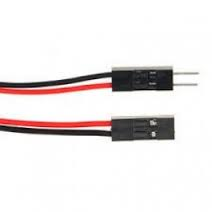
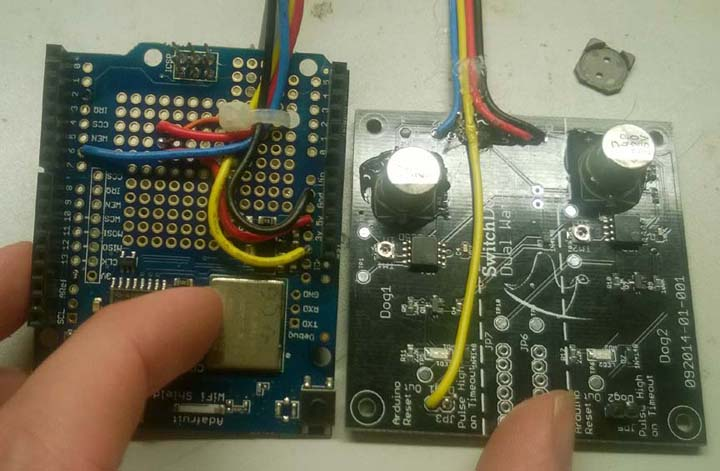
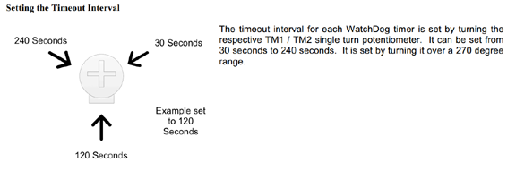
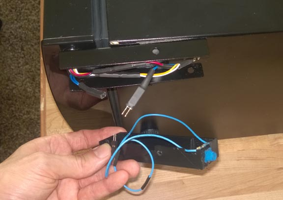

You can buy these in bulk on ebay, along with the connector housings, but the easiest way is to just buy a pack of male to female jumpers for a couple bucks. You can use them as is to make plugable connections, or you can cut them in half and solder one end to a board/switch, and plug the matching ends together to form the disconnectable joint.
If you do buy them in bulk, I would just hand crimp them with small needle nose pliers and solder them. The special crimper tools are bulky and horrible to use in my experience.
external watchdog
The first is the use of an external watchdog circuit. The Wi-Fi card has an awful lot of magic going on in the background. It is doing an extremely complex task, and can get hung up on occasion. I've been running this for about a year, and I was having to reset my Arduino manually several times a month. (Note: I may have fixed the bug that was giving me grief it will take a couple months to find out for sure)
the easiest way to have rocksolid stability without having to be around to reset it once in a while is to use an external watchdog. This circuit is hooked to the Arduino reset line, and if it does not receive a signal from the Arduino within an adjustable time limit it will automatically restart it.
the external watchdog that I used is the SwitchDoc Labs Dual WatchDog Timer Which can be had for $16 US. you can find the vendor page here.
to enable this feature set USE_EXT_WATCHDOG = 1 in your private.h file.
Wiring is very similar to the humidity sensor. It only requires 4 wires. A power, ground, digital pin 6, and a line to the arduino reset pin.

the time until reset is adjustable, and set with an adjustable dial ( the small silver disc with the Philips head screw in the center) you will want to set the timeout to be at least in the middle

modify default temp
for the body of the humidor I have been using a thermal electric cooler such as vino temp or haier. These provide an excellent environment to keep your cigars at a perfect temperature and humidity level. One problem with thermoelectric coolers is that they are built for storing wine not cigars. You can adjust the temperature up or down a bit. By default they usually reset 54 degrees.
This is too cold for cigars and you cannot maintain proper humidity at this level. Also if you were to take your cigars out on a hot day you could run into problems with your wrappers cracking. You can adjust the temperature up to almost 70 degrees F, however every time there is a power out the cooler will automatically reset back to 54 degrees F. When this happens your humidity will go on a roller coaster ride, which causes problems down the road. Especially in the summer this can be a problem when the cooler temperature inside the humidor crosses the dewpoint and you get condensation, which really screws up your supposedly controlled environment.
The good news is there is an easy fix to this problem. The way the cooler reads the temperature is through the use of a thermal resistor. As the temperature changes so does the resistance of the sensor. By introducing a variable resistor into the circuit, we are able to lie to the cooler and have it think the temperature is actually cooler than it really is. Below is a link to an article showing how to alter a haier cooler with this modification.
With this modification, the cooler thinks it is always at the default 54 degrees while maintaining a perfect 70 and you do not have to reset the temperature when the power goes out.. perfect fix for $1.50.

remote display
for a cleaner look on your installation you could actually mount the Arduino and the Wi-Fi card on the back case of your humidor and only have the LCD screen mounted to the side. Looking at the LCD shield you see quite a number of connectors, in reality only four of these are being used. Using the pin chart at the bottom of this document you could connect wires instead and then just mount the small display on the side of the humidor for a cleaner look. The LCD only requires 4 pins Analog 4 & 5, and a power and ground connection. The TFT from v2 can also be remoted, I think it will require about 12 wires though.
remote buttons
the buttons on the LCD shield are in a configuration for a menu system and are quite small and an awkward places for general use buttons. You can actually forgo installing the buttons and then solder in wires that go to an external button that is easier to mount on the case. This simplifies the enclosure fabrication a substantial degree. You will have to inspect the traces on the circuit board to figure out which ones are isolated and not connected to anything, which one is connected to ground, and which one has a trace going back to the chip.
auto water
in previous builds there was an auto water feature built in. The idea was to have a reservoir of water and a peristaltic pump. When humidity was too low the pump would automatically activate and send water through a misting head to saturate the humidity beats. You can still find the code for this in the github repository however it has been removed from the production code. It was fully tested but never utilized it's actually much easier just to switch over to the boveda packs which maintain humidity extremely well and eliminate all the humidity swings associated with watering beads.
pins used
generally you will not need the below information unless you are adding new capabilities to your humidor. For completeness I've included the below listing which shows what pins are currently utilized: (version 1 build)